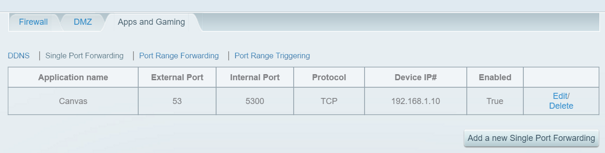
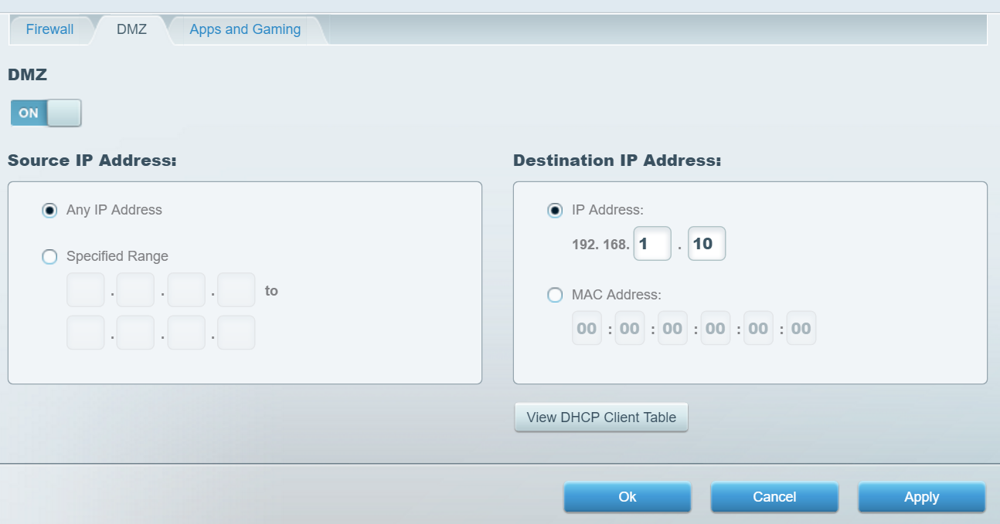
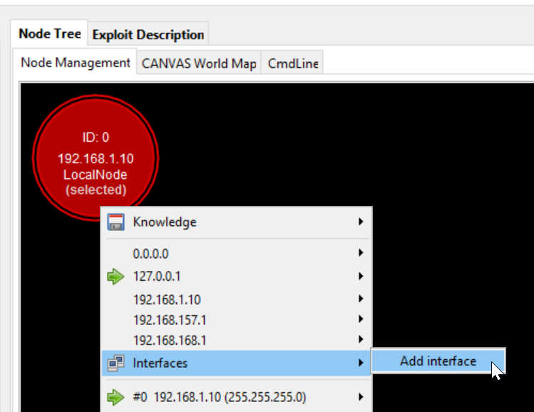
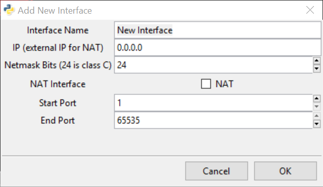
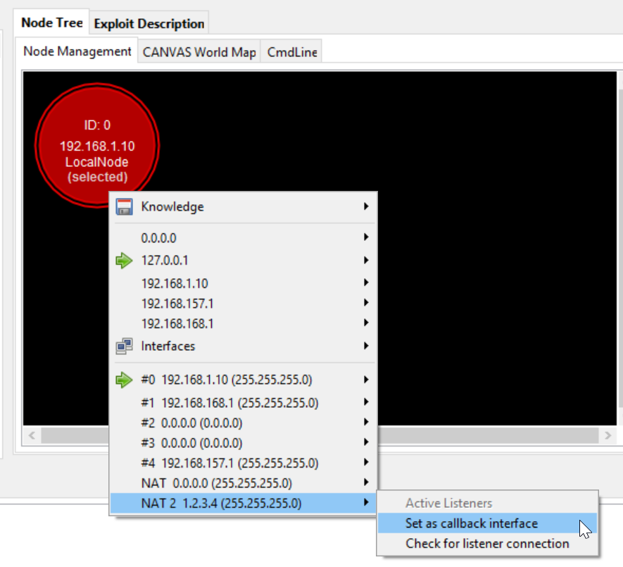
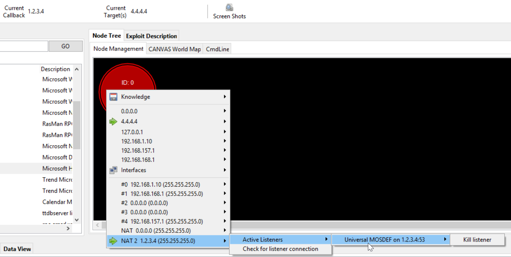
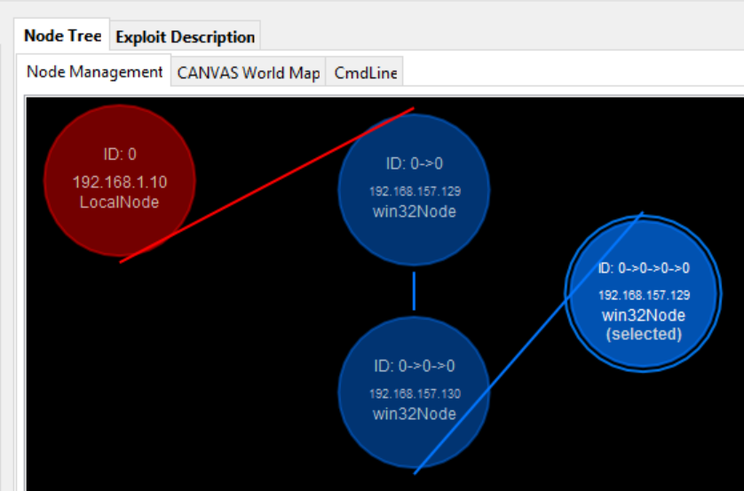

CANVAS Advanced Usage¶
This section will cover more advanced and less common CANVAS scenarios.
Using CANVAS Behind NAT¶
Although it is recommended to avoid using CANVAS behind a NAT if you are performing tests against hosts over the internet, it is not always technically possible. For example you might be running CANVAS on a machine behind a home router, cable or DSL modem. In such scenarios it is not possible to receive callback connections from exploited targets, unless you setup CANVAS and your network properly. To use CANVAS behind a NAT there are two steps you should follow.
First, make sure you have proper port forwarding rules enabled on your gateway (modem, router, etc.) Second, create a virtual network interface in CANVAS to handle incoming traffic.
Setting Port Forwarding¶
Almost all SOHO routers and modems provide the port forwarding feature, often through their web interface. This feature might be named differently depending on what vendor your device is from, but it is commonly referred to as DMZ Host or Port Forwarding. If your device provides both options, the Port Forwarding option often allows you to configure a single or range of ports to be forwarded, where as DMZ option will usually forward ALL traffic to the configured host except the individual ports that are already configured to be forwarded in Port Forwarding section.
The following screenshot shows a sample interface from a Linksys wireless router, but the steps are very similar in other brands.
Let’s assume our public IP address (assigned to the modem or router) is 1.2.3.4 and IP address of the host that is running CANVAS is 192.168.1.10. Usually we use only a few ports for callback connections, and we want the router to forward any packets coming to those ports to our CANVAS host. Port TCP/53 is often left open in many networks for outbound connections so we will use it as an example. As you can see in the above screenshot, we have created a new port forwarding rule, setting the “External Port” to 53 and “Internal Port” to 5300. The protocol is set to TCP, and the “Device IP” (CANVAS host) is also set accordingly. Having that rule enabled will make the router to forward any packets coming to its public IP address (1.2.3.4) on port TCP/53 to the host 192.168.1.10 on port TCP/5300. Repeat the same process for as many ports as needed.
Another approach to do the port forwarding is to use the “DMZ” feature, which will basically forward all ports to the specified internal host behind the NAT. This is not recommended though, as it will expose your internal machine to the Internet. While this is easier to setup, we highly recommend to use manually configured port forwarding. The following screenshot shows what the configuration of DMZ host looks like in a Linksys router:
As you can see Linksys allows wider range of options for setting the DMZ host such as configuring source IP ranges, or using MAC address instead of IP address for the destination host. Your modem or router might not provide these options and only allow you to set a single destination IP address.
Creating Virtual interface¶
One of the lesser known but powerful features that CANVAS provides is the creation of virtual network interfaces. This feature allows you to define a new listening interface for incoming connections and assign desired IP address to it, even if the interface does not exists on the machine running CANVAS. This allows us to handle scenarios where we want to use CANVAS behind NAT or tunnels where the exploited machine initiating the callback connection cannot directly see the network of the CANVAS machine. In this case where we are behind NAT, if we try to configure a remote exploit against a target, CANVAS will automatically set the callback IP address to 192.168.1.10, which is NOT what we want. The target machines will see our traffic coming from 1.2.3.4 (modem IP address) but our payload will be set to call back to 192.168.1.10. This will obviously fail. By creating a virtual interface in CANVAS we will basically tell CANVAS to set a custom IP address in exploit payloads. Since we have already configured our modem to forward ports properly, CANVAS will be able to successfully receive incoming traffic from exploited targets.
To create a new virtual interface, in the CANVAS GUI and “Node Tree” tab right click on your node and under the “Interface” sub-menu select “New Interface”.
As shown in the following screenshot, you will see a configuration window for the new virtual interface. In our sample scenario we want to set the IP address to 1.2.3.4 and Netmask Bits to 24. Since we are behind the NAT we will check the “NAT Interface” option, and set the required port range. You can leave the port range as default, but if you want CANVAS to handle only certain ports over this virtual interface you can assign them accordingly. Note that you can create multiple virtual interfaces in CANVAS for multiple IP addresses or even multiple ports on a single IP address.
Once the interface is created, you should select and set it as your default interface, as shown in the following screenshot. You should then see the “Current Callback” in the GUI showing 1.2.3.4.
You are now ready to lunch exploits against targets over Internet. Note that since you are using specific ports configured on your router for forwarding, you should also use the same defined ports to create a new listener on the virtual interface. In our sample scenario we configured forwarding for port TCP/53 so we should now create a new MOSDEF listener (of whatever type you need) on port 53. Since we have already selected the virtual interface as our default, the MOSDEF listener will be automatically assigned to our virtual interface. To confirm that, as shown in the following screenshot you can right-click on the virtual interface and make sure the new MOSDEF listener is created:
Pivoting¶
Pivoting in short, and in CANVAS terms, is using a compromised machine as a stepping stone to reach and exploit other machines that might not be otherwise accessible.
In this example, we will go through the steps required to exploit a Windows machine using this feature. The CANVAS machine has the IP address 192.168.1.10 and has network access to reach another system with the IP address 192.168.157.129. Our final target is a Windows machine with the IP address 192.168.157.130, which is not directly network accessible to our CANVAS machine but 192.168.157.129 can reach it, so we will need to pivot through this machine to reach and exploit our final target.
We have used the ms08_067 module to compromise the host 192.168.157.129 and have an active MOSDEF session from this host. To use it as a pivot, right-click on the node in the “Node Tree” tab in the CANVAS GUI to see the list of network interfaces on this machine:
Then select this machine’s network interface as your default callback interface, as shown in the above screenshot. The next step is to add the IP address of your final target and make it your default target. To do so you can simply right-click on the node in the GUI use Knowledge > Add new host menu to add 192.168.157.130 as a target.
Tip
Pivoting works only from MOSDEF node type. If the node is a more limited node type such as Powershell, PHP or Java node, it must be converted or upgraded to MOSDEF.
From this point any module or exploit run in CANVAS will be executed against the active node, which in our example is 192.168.157.129 and callback connections will also make their callbacks to this machine. We are now ready to exploit our final target 192.168.157.130. In this example we use the psexec module (which is Immunity’s own implementation well known PSexec tool) to run a MOSDEF service on our final target. Once the module is completed, you will see your new MOSDEF Listener-shell window open and in the “Node Tree” tab of the GUI there will be a new node under our relay host:
CANVAS does not limit you in the number of hosts you can pivot from. If you are in a complicated and restricted network, you can go through the same steps and use this third host as your pivot point to reach yet another machine three levels deep inside the network. The following screenshot shows an example of such case where two middle hosts are relaying your traffic.
The pivoting feature in CANVAS is extremely useful in hardened network environments, and in scenarios such as reaching the internal network from a machine in a DMZ that is reachable over the Internet. Another typical usage of this feature is bypassing firewall rules and restrictions, for example when a server is reachable only from certain workstation in the network.
Tip
When pivoting, especially if there is more than one pivot point, execution of modules will take longer than usual. This is because CANVAS have to take care of a lot of complicated tasks in the background. Pivoting in CANVAS is not a simple forwarding of packets. Everything happens as if it has been generated, executed and sent from the middle host.
Tip
CANVAS has a module named psexec which, as the name implies, allows you to run commands on remote Windows machines over RPC. This is a completely independent implementation of the Microsoft SysInternals PSExec tool. There are a number of advantages to using this module rather than the PSExec tool from Microsoft. The original PSExec and its behaviour is well known and detected by almost any Anti-virus making it difficult to use in real-world environments if the target is protected by an Anti-virus. Some Anti-virus softwares will still detect the PSExec even when the binary is modified by packing or encrypting it. The CANVAS implementation detection rate is much lower. Moreover, if you specify “mosdef” as your command, it automatically generates, uploads and executes a MOSDEF trojan to the remote machine making it a new CANVAS MOSDEF node.
Automatic Startup Actions¶
Every time you successfully exploit a remote/local machine and manage to pop a MOSDEF node, you lprobably do some common post-exploitation steps on the host. In lab environments or in cases where you have limited number of nodes to deal with no time pressure, manual post exploitation workflows work great. There are scenarios and cases though, where there may be a large number of nodes. A good example is a successful client-side campaign or compromising many machines in a Windows domain. It is not practical or in some cases not possible, to hop over 50 nodes and manually run commands on each. You may also not be willing to risk your limited time available for manual exploration of the target machines. Plus, you never know how long your active MOSDEF node may last so it is a good idea to stabilize your access to that machine as soon as possible. In these situations, scripting CANVAS is the way to go.
CANVAS is designed to be able to handle modules in the background. There is a universal startup module that is called and executed upon each successful exploitation. By default this module works more as a demo and not doing much, but it can be extended by users. This module is located in the CANVAS directory at the .\exploits\command\universal\startup\startup.py path.
You may have noticed after exploiting a Windows machine there is a message in logs stating “Checks to see if we’re inside a VM”. This is from the automatic execution of checkvm module using this automatic startup mechanism. Looking at the Python source code of the module you will see that there a few more commented out options such as taking screenshots or listing directories.
#! /usr/bin/env python
#Proprietary CANVAS source code - use only under the license agreement
#specified in LICENSE.txt in your CANVAS distribution
#Copyright Immunity, Inc, 2002-2008
#http://www.immunityinc.com/CANVAS/ for more information
import sys
if "." not in sys.path:
sys.path.append(".")
import os,getopt
import socket
from exploitutils import *
from canvasexploit import canvasexploit
from ExploitTypes.localcommand import LocalCommand
import canvasengine
import time
NAME = "checkvm"
DESCRIPTION = "Checks to see if we're inside a VM"
DOCUMENTATION = {}
VERSION = "1.0"
PROPERTY = {}
PROPERTY['TYPE'] = "Commands"
PROPERTY['SITE'] = "Local"
PROPERTY['ARCH'] = [ ["Unix"], ["Windows"] ]
class theexploit(LocalCommand):
def __init__(self):
LocalCommand.__init__(self)
self.result = ""
self.supportedNodeArgs = [["win32Node", "bsdNode", "linuxNode"]]
self.name = NAME
def run(self):
self.setInfo("%s (in progress)" % (NAME))
for node in self.argsDict["passednodes"]:
if node.nodetype not in self.supportedNodeArgs[0]:
self.log("%s node type not supported" % node.nodetype)
continue
self.result = node.shell.checkvm()
target = node.get_known_host("127.0.0.1")
if not self.result:
self.setInfo("%s -> Host is not likely to be a VirtualMachine"%(NAME))
self.log("%s -> Host is not likely to be a VirtualMachine"%(NAME))
else:
self.setInfo("%s -> Host is likely to be a VirtualMachine"%(NAME))
self.log("%s -> Host is likely to be a VirtualMachine"%(NAME))
target.add_knowledge("VirtualMachine", self.result, 100)
self.setInfo("%s (finished)" % (NAME))
return 1
You can script pretty much anything CANVAS is capable of here such as calling other modules, tools, commands or even exploits. Grabbing screenshots and dumping password hashes (if you have administrative privileges) are the most common uses. Note that you can also change CANVAS module code (as long as you are not changing module dependencies) while CANVAS is running. This allows you to change and update the startup module code if necessary during your operation. You will not loose your active nodes by doing so. The easiest way to make CANVAS use your updated code without restarting CANVAS is to use the reload option from File > Menu in the GUI.
Port Forwarding¶
It often happens that you need to connect to some services or internal sites in your target network that are not exposed over Internet. Typically, the only way to access such resources is to proxy your traffic through an internal host that you have already compromised. You can use the MOSDEF pivoting feature to exploit secondary hosts, but to forward TCP traffic outside of CANVAS you will need to use a separated module.
The wp_tcpforward as the name implies, allows you to perform basic TCP port forwarding. Currently, this module is limited to Windows machines. If you are dealing with a Linux or Unix type of machine you should instead use SSH port forwarding, which is has been made easy to use in the ssh_reverse_tunnel module in CANVAS. The ssh_reverse_tunnel module provides a similar functionality and is basically a python implementation of a SSH client, providing you the features you will get from a standard SSH client for (reverse) port forwarding using the SSH -R command.
Port forwarding works uses a proxy tool (the wp_tcpforward module in this case) to open a listening port on your local machine. Any traffic received on this local port is forwarded to the remote agent (running on the middle proxy machine). The remote agent will then forward the traffic to whatever the destination host and port you have configured is and relay back received responses the same way. Using the wp_tcpforward you do not need to upload any binary or remote agent to the proxy host since everything is provided using CANVAS and MOSDEF node features. This means you can perform the port forwarding without touching the disk on the proxy host.
Options to use this module are pretty straight forward. As shown in the above screenshot, CANVAS will listen on the local machine on all if its interfaces (because we used 0.0.0.0) on port TCP 8080. All the traffic going to this port will be forwarded through the proxy host to the destination “intranet.target.com” on port 80. So requests to “127.0.0.1:8080 from the CANVAS local machine and forwarded through the proxy to the internal web site running at “intranet.target.com”. Hostnames are resolved on the proxy node, so you can use internal names or any DNS name that the proxy machine can resolve. Since this connection is going thorough MOSDEF it means that you can also combine this forwarding with pivoting, to reach even deeper systems.
The wp_tcpforward module can work in two modes. In the Local mode the given “listen Port” will open on the CANVAS machine and traffic will be forwarded to the “Connect Host”.
In the Remote mode the given “Listen Port” will be opened on the proxy machine and traffic to that port will be forwarded to the machine running CANVAS. The Remote mode is especially useful when you want the remote machine to connect to a service on your system such as SSH.
Tip
If you are dealing with a non-windows target machine, the ssh_reverse_tunnel module should be your choice since the wp_tcpforward was initially developed for Windows targets. If you are concerned about the security of forwarded traffic, especially if you are routing traffic over Internet, you should consider using standard SSH or using the ssh_reverse_tunnel module to ensure the traffic is encrypted while in transit.
XML RPC Interface¶
[To be added]